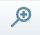
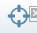
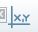

WIMADA  Wie macht man das? |
StartseitekvwmapThemenwunsch |
WIMADA Wie macht man das? |
StartseitekvwmapThemenwunsch |
| Beschreibung | Darstellung | ||||
|---|---|---|---|---|---|
1. Benutzeroberfläche
1. Menüleiste mit Übersichtskarte |
|
||||
1.1 Menüleiste
Der Umfang der Menüleiste hängt von der jeweiligen Stelle ab in der man sich befindet und wird vom jeweiligen Administrator der Seite festgelegt. Hier wird der Teil der Menüleiste erklärt, der jedem zugänglich ist. |
|
||||
1.2 Werkzeugliste
Die Werkzeugleiste befindet sich im oberen Teil der Karte und beinhaltet folgende Funktionen AccordionWenn man in der aktuellen Sitzung mindestens einmal den Kartenausschnitt geändert hat, kann man mit dem Pfeil nach links wieder zum vorherigen Ausschnitt zurückkehren. Man kann auf alle vorherigen Ausschnitte bis zum Anfang zurückgehen. AccordionWenn man zu einem vorherigen Ausschnitt zurückgekehrt ist, wird der Pfeil nach rechts aktiv. Dann kann man wieder "nach vorne" blättern. AccordionKlickt man auf diesen Button wird die Karte auf die größtmögliche Ausdehnung gezoomt. Sie zeigt dann folglich den gesamten Bereich, welcher der jeweiligen Stelle zugewiesen ist. Gleiches kann man erreichen indem man auf den Menüpunkt "Übersicht" klickt. AccordionDamit verschiebt man den Kartenausschnitt, wobei man den aktuellen Maßstab beibehält. Wenn man diesen Button aktiviert, zieht man das Bild mit gedrückter linker Maustaste in die gewünschte Position. Nach Loslassen der Maustaste wird das Kartenbild mit gleichem Maßstab neu aufgebaut. Wenn man auf einen Punkt in der Karte klickt, wird dieser Punkt der neue Bildmittelpunkt.  AccordionDamit zoomt man in das Kartenbild hinein. Wenn man diesen Button aktiviert, kann man mit gedrückter linker Maustaste ein Rechteck aufziehen, welches nach Loslassen der Maustaste der neue Kartenausschnitt wird. Wenn man - alternativ - in die Karte klickt, wird mit dem Zoomfaktor "2" in die Karte hineingezoomt, das bedeutet, dass sich der Maßstab verdoppelt(z.B. von 1:10000 zu 1:5000) bzw. der angezeigte Kartenausschnitt nur noch halb so groß ist wie zuvor. Der Zoomfaktor lässt sich im Menüpunkt "Stelle wählen" einstellen. Man kann aber auch mit dem Mausrad zoomen. AccordionDamit zoomt man sich aus dem Kartenbild hinaus. Wenn man diesen Button aktiviert, klickt man in das Kartenbild. Man erhält ein neues verkleinertes Kartenbild. Als Zoom-Faktor ist eine "2" eingetragen, was bedeutet, dass sich der Maßstab beim Herauszoomen halbiert, z.B. von 1:2.000 auf 1:4.000. Der Zoomfaktor lässt sich im Menüpunkt "Stelle wählen" einstellen. Man kann aber auch mit dem Mausrad zoomen.  AccordionZoom: Wenn man den Button anklickt, öffnet sich ein kleines Eingabefenster, in das man eine beliebige Koordinate eingibt - Rechtswert zuerst, dann Leerzeichen, dann Hochwert. Das Bild wird dann mit diesem Punkt als neuer Bildmitte und mit dem zuletzt eingestellten Maßstab neu aufgebaut. Das funktioniert nur, wenn man die Koordinate im selben Koordinatensystem eingibt, das auch für die Karte eingestellt ist (das Kartenkoordinatensystem wird unter "Stelle wählen" im Punkt "1.Kartenprojektion (EPSG-Code)" angezeigt). Der Punkt selber erscheint in der Kartenbildmitte als Markierung und in der Legende als Eintrag in der Gruppe Suchergebnis. Dort können Sie ihn auch wieder entfernen.  AccordionDurch anklicken auf der Karte werden unterhalb der Kartenfensteroptionen Koordinaten in Gauß-Krüger EPSG 2398, sowie UTM EPSG 25833 ausgegeben. AccordionDieser Button funktioniert genauso wie der einfache Info-Button. Zusätzlich zu dem Objekt, das man angeklickt hat, werden aber auch noch alle anderen Objekte abgefragt, die das angeklickte Objekt berühren. AccordionMit diesem Button kann man in die Karte klicken und anschließend einen Abfrageradius (in Metern) angeben. Am Cursor erscheint ein Kreis, der der angegebenen Größe entspricht. Man erhält eine Sachdatenanzeige aller Objekte des ausgewählten Themas, die sich in diesem Kreis befinden. AccordionMan kann freihändig ein Polygon definieren und eine Sachdatenanzeige aller Objekte des ausgewählten Themas erhalten, die sich in diesem Polygon befinden. Man gehe wie folgt vor: Nachdem man auf den Button geklickt hat, klickt man in die Karte und malt durch weitere Klicks ein Polygon um den Bereich, der einen interessiert. Das Zeichnen beendet man mit einem Doppelklick am letzten zu zeichnenden Punkt. Bei allen Zwischenpunkten wird einem die Flächengröße des gezeichneten Polygons angezeigt. Damit dient dieser Button gleichzeitig zur freihändigen Flächenmessung. Wenn man nur eine Fläche messen will, ohne eine Sachdatenabfrage, dann macht man zum Schluss keinen Doppelklick, sondern verlässt die Funktion durch erneutes Klicken auf den Info-Button. AccordionDamit kann man in der Karte Strecken abgreifen. Wenn man diesen Button aktiviert, muss man zunächst einen Startpunkt festlegen. Durch weitere Klicks kann man eine beliebig viele Eckpunkte erzeugen. Man beendet das Messen, indem man erneut auf den Strecken-Mess-Button klickt. Man beachte, dass man während des Messens auch zoomen oder den Kartenausschnitt verschieben kann. Man macht einfach einen Doppelklick. Das Messen wird pausiert und man kann (ohne den Verschiebebutton zu klicken!) das Kartenbild verschieben oder mit dem Mausrad hinein- oder herauszoomen. Wenn man den Strecken-Mess-Button aktiviert hat, erscheint rechts unterhalb der Karte ein Häkchenfeld "Punktfang". Wenn man dort ein Häkchen setzt, werden alle Eckpunkte von allen aktiven Themen im Maßstabsbereich geladen. Man kann dann diese Punkte anklicken und so punktgenau messen. Wenn man das Häkchenfeld ausgewählt hat, werden alle Eckpunkte in der Karte blassrot markiert. Man beachte bitte, dass das Laden der Punkte einige Sekunden dauern kann. Die gesamte Strecke die gerade gemessen wird erscheint neben dem Mauscorsur. Die Summe der Strecken innerhalb der gesetzten Eckpunkte steht in Klammern dahinter. |
|
||||
1.3 KartenfensterIn der Mitte sieht man das Kartenfenster. Es wird mit jedem Aufruf nach den Maßgaben neu generiert. Wenn man also die Themenauswahl verändert, wenn man rein- oder rauszoomt, dann wird sich jeweils der Karteninhalt ändern. Das betrifft nicht nur den thematischen, sondern auch den kartographischen Inhalt. Übrigens: Rein- oder Rauszoomen geht auch mit dem Maus-Scrollrad, wenn der Mauscursor sich in der Karte befindet. |
|
||||
1.4 ThemenbaumDer Begriff "Themengruppe" bezeichnet eine thematische Gruppierung von verwandten Themen. So ist der Punkt "Verwaltungsgrenzen" eine Themengruppe und beinhaltet thematisch zugehörige Themen (wie Verbandsgrenzen geometrisch, Flurstückszuordnung, betroffene Flurstücke, etc.) Die einzelnen Themengruppen lassen sich durch das +/- auf-/zuklappen(wichitg für Übersichtlichkeit). Eingeklappte Themengruppen die Fett dargestellt sind haben ein oder mehrere Themen sichtbar eingestellt. Es ist möglich in einer Themengruppe alle Themen mit einem Klick durh die Pfeile neben "alle" sichtbar oder anfragbar zu machen. |
|
||||
1.5 MaßstabsleisteLinks unterhalb des Kartenfensters wird einem der aktuelle Maßstab angezeigt, rechts unterhalb eine entsprechende Maßstabsleiste. Man kann einen beliebigen Maßstab eintragen. Durch Drücken der Entertaste wird das Kartenbild mit dem gewählten Maßstab neu aufgebaut. Man beachte, dass die Inhalte der Karte maßstabsabhängig dargestellt werden. Man beachte, dass in den jeweiligen Stellen verschiedene Ober- und Untergrenzen für den Maßstab festgelegt sind. |
|
||||
1.6 KartenfensteroptionMan kann den räumlichen Ausschnitt (also nur den Kartenausschnitt, Legende und Menü werden nicht mit angezeigt) speichern, indem man auf "Ausschnitt speichern" klickt. Man kann einen kurzen Kommentartext mitspeichern. Über den Link "Ausschnitt laden" kann man den gespeicherten räumlichen Kartenausschnitt später jederzeit wieder aufrufen |
|